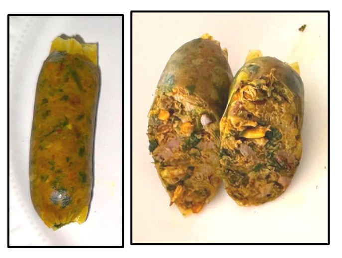
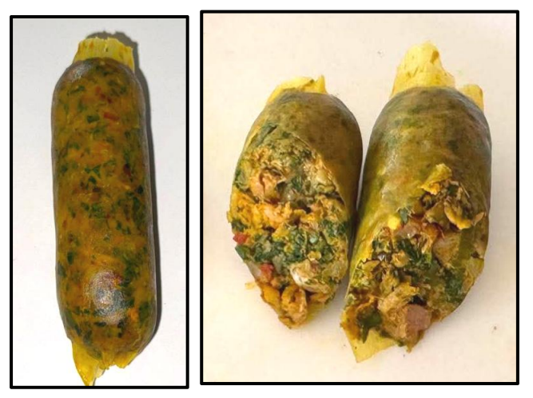
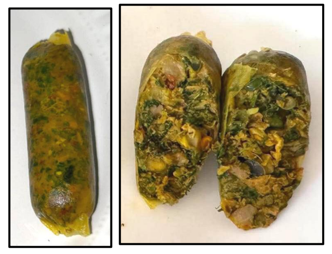

III · ผลการศึกษา
จากการทดลอง 3 ส่วน สู่สูตรที่ผู้บริโภคยอมรับมากที่สุด
ส่วนที่ 1 · ปริมาณใบชะพลูที่เหมาะสม
ทดลองใส่ใบชะพลู 3 ระดับ คือ ร้อยละ 5, 10 และ 15 ของน้ำหนักส่วนผสม แล้วประเมินคุณลักษณะทางกายภาพและทดสอบทางประสาทสัมผัสโดยผู้ทดสอบ 30 คน

สูตรที่ 1 · 5%
เนื้อสัมผัสร่วนเล็กน้อย ไม่มีกลิ่นเขียว
คะแนนรวม 7.07
คะแนนสูงสุด

สูตรที่ 2 · 10%
กลิ่นเขียว รสขมเล็กน้อย เนื้อสัมผัสพอดี
คะแนนรวม 8.27

สูตรที่ 3 · 15%
กลิ่นและรสขมชัดเจน เนื้อร่วน แตกหักง่าย
คะแนนรวม 3.97
ส่วนที่ 2 · ปริมาณแป้งมันที่เหมาะสม
เมื่อได้ปริมาณใบชะพลูที่ดีที่สุดแล้ว (10%) จึงทดลองปรับปริมาณแป้งมัน 3 ระดับ คือ ร้อยละ 2, 4 และ 6 เพื่อแก้ปัญหาเนื้อสัมผัสแข็งกระด้างและแตกหักง่าย
แป้งมันร้อยละ 4 ให้เนื้อสัมผัสชุ่มฉ่ำพอดี เกาะตัวเป็นเนื้อเดียวกันดีที่สุด ในขณะที่แป้งมันน้อยเกินไป (2%) ทำให้เนื้อแข็งกระด้าง และมากเกินไป (6%) ทำให้เนื้อนิ่มเกินไป
ส่วนที่ 3 · อายุการเก็บรักษาแบบแช่แข็ง
นำสูตรที่ดีที่สุด (ใบชะพลู 10% + แป้งมัน 4%) มาบรรจุถุงสุญญากาศ เก็บที่อุณหภูมิ -18 ถึง -20 องศาเซลเซียส แล้วตรวจสอบทุก 1 เดือน
เดือน 0
เชื้อจุลินทรีย์ผ่านมาตรฐาน · สี-กลิ่นดี · คะแนนยอมรับ 8.5
เดือน 1
เชื้อจุลินทรีย์ผ่านมาตรฐาน · สี-กลิ่นดี · คะแนนยอมรับ 8.2
เดือน 2
เชื้อจุลินทรีย์ผ่านมาตรฐาน · กลิ่นเริ่มลดลง · คะแนนยอมรับ 7.1
เดือน 3
เชื้อจุลินทรีย์เกินมาตรฐาน · เริ่มมีกลิ่นผิดปกติ · คะแนนยอมรับลดลงเหลือ 4.3
สรุปได้ว่าผลิตภัณฑ์สามารถเก็บรักษาแบบแช่แข็งได้อย่างปลอดภัยนาน 2 เดือน ก่อนที่คุณภาพจะเริ่มเสื่อมลง
คุณค่าและประโยชน์ของโครงงาน
- ได้สูตรไส้อั่วแกงหอยขมใบชะพลูที่มีรสชาติและคุณภาพเป็นที่ยอมรับของผู้บริโภค
- ทราบอายุการเก็บรักษาที่เหมาะสม นำไปใช้วางแผนการผลิตและจำหน่ายได้อย่างปลอดภัย
- เพิ่มมูลค่าให้วัตถุดิบท้องถิ่นอย่างหอยขมและใบชะพลู ส่งเสริมการใช้ทรัพยากรชุมชน
- ต่อยอดอาหารพื้นบ้านให้ทันสมัย สามารถพัฒนาเป็นผลิตภัณฑ์เชิงพาณิชย์ได้ในอนาคต